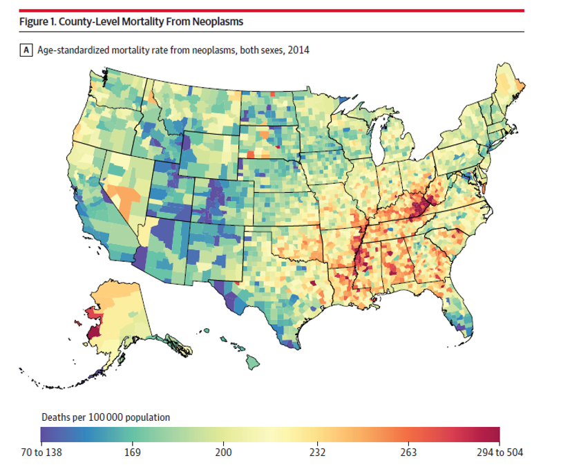
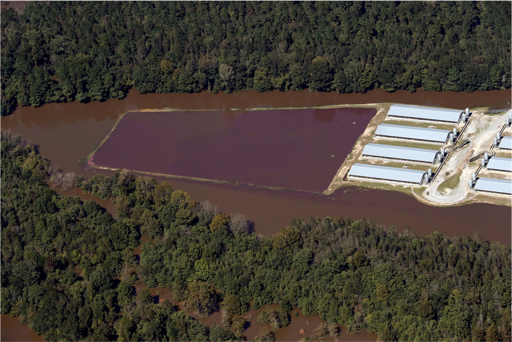
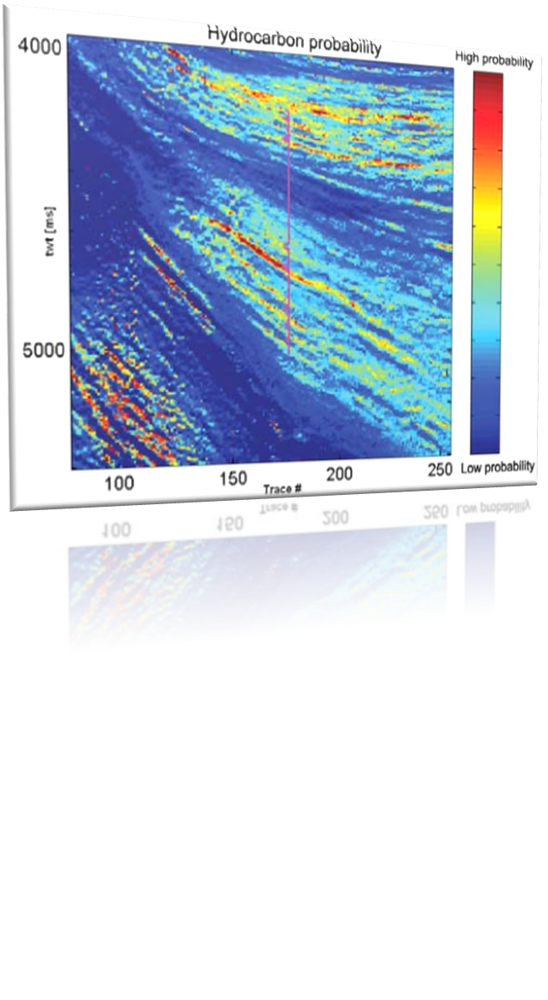
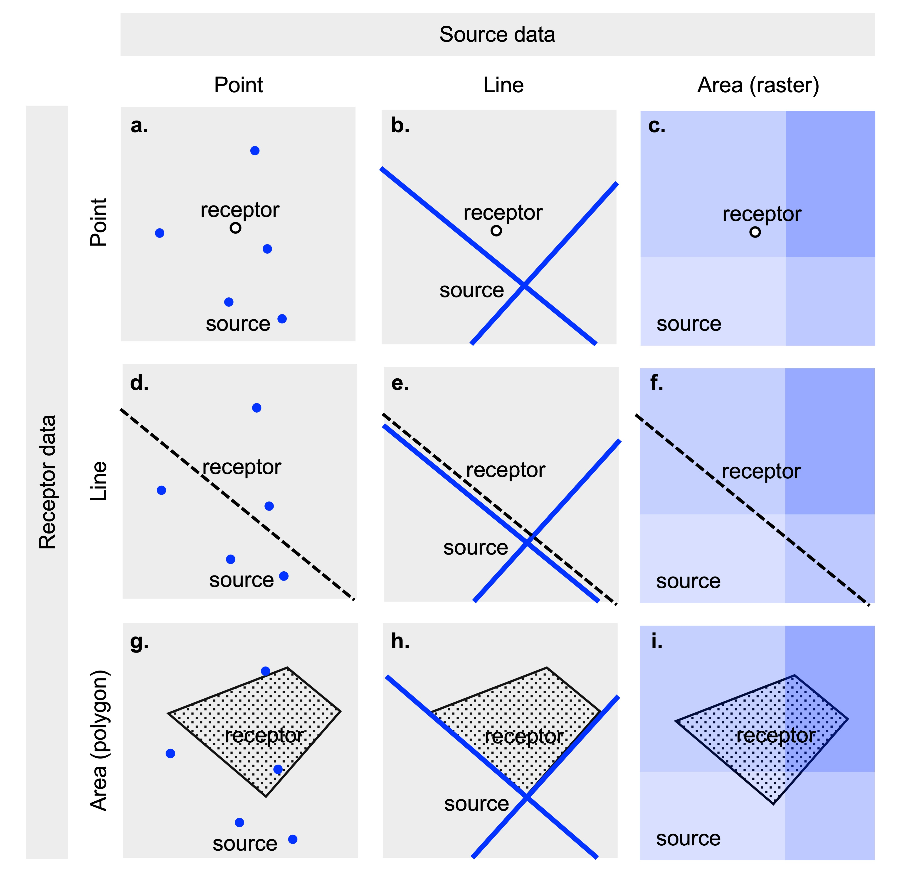
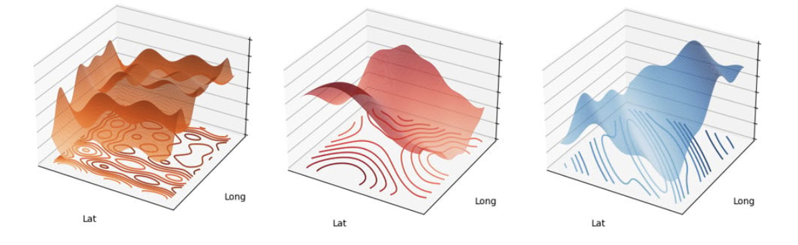

graph TD;
style A fill:#91bcfd , stroke:#333, stroke-width:2px, rounded:true;
style B fill:#91bcfd , stroke:#333, stroke-width:2px, rounded:true;
style C fill:#91bcfd , stroke:#333, stroke-width:2px, rounded:true;
A[Research Question: Exposure and Health Outcome Relationship?] --> B[Preparation of Geospatial Exposure Data];
A --> C[Preparation of Health Outcome Data];
Geospatial exposure modeling methods and applications in human health
Kyle P Messier, PhD
Stadtman Tenure Track Investigator
National Institute of Environmental Health Sciences
Division of Translational Toxicology
ENVR 500 Guest Lecture: February 22, 2024
About Me
- BS Environmental Science: UNC-Asheville
- MS, PhD, Environmental Science and Engineering, UNC ESE, Advisor: Marc Serre
- Postdoc, Environmental Defense Fund, High-Resolution Air Pollution Mapping with Mobile Monitoring
- Research Faculty, Oregon State University, Department of Environmental and Molecular Toxicology
- Tenure Track Investigator, NIH/NIEHS/DTT
About Us: {SET}group
- Spatiotemporal Exposure Mapping
- Chemical and Stressor Mixtures Prediction
- Mechanistically Informed Risk Assessment
\[ \newcommand\by{{\mathbf{y}}} \newcommand\bY{{\mathbf{Y}}} \]
About Us: {SET}group

Eva Marques
Daniel Zilber
Ranadeep Daw
Mariana Alifa
Insang Song
Kyle Messier
Mitchell Manware (Not Pictured)
The Importance of Place


The Importance of Place

- Hurricane Matthew, 2016
- Hurricane Florence, 2018
- Swine Waste Concerns
- Fecal Bateria
- Nitrate and Phosphorous Pollution
- Infectious Diseases
The Importance of Place


History of Spatial [Geo] Statistics Mining
Matheron and Krige developed geostatistical methods to predict ore content from core samples
Matheron coined the term “Kriging” after Krige
“Nugget” is a term used to random noise because predicting where gold nuggets were was so difficult
History of Spatial [Geo] Statistics: Forestry
Matérn developed correlation models for spatial variation for applications in Forestry
To this day, we use the “Matérn” covariance function
History of Spatial [Geo] Statistics: Petroleum Engineering

- Used to evaluate the oil and gas field reservoirs
- Uses geology and seismic data
History of Spatial [Geo] Statistics: Public Health

Cressie, 1990: Statistics for Spatial Data
Waller and Gotway, 2004: Applied Statistics for Public Health Data
Wide scale adoption for statisticians and engineers in ecological and human exposure and risk applications
Source and Receptor Geometries

Questions:
In figure C, what is an example of geospatial health data geometry at a point? Check all that apply.
In figure I, what is an example of geospatial health data geometry at an area? Check all that apply.
Geospatial Health Analysis Overview
Geospatial Health Analysis Overview
graph TD;
style A fill:#91bcfd , stroke:#333, stroke-width:2px, rounded:true;
style B fill:#91bcfd , stroke:#333, stroke-width:2px, rounded:true;
style C fill:#91bcfd , stroke:#333, stroke-width:2px, rounded:true;
A[Research Question: Exposure and Health Outcome Relationship?] --> B[Preparation of Geospatial Exposure Data];
A --> C[Preparation of Health Outcome Data];
B1[Selection of Exposure Metrics];
B2[Geospatial Exposure Modeling Strategy];
B3[Geospatial data collection and integration];
B4[Geospatial model fitting and calibration];
B --> B1;
B1 --> B2;
B2 --> B3;
B3 --> B4;
Questions:
- what is an example of a point-level exposure data set? Check all that apply.
- Which of the following are examples of an area-level exposure data set? Check all that apply.
Geospatial Health Analysis Overview
graph TD;
style A fill:#91bcfd , stroke:#333, stroke-width:2px, rounded:true;
style B fill:#91bcfd , stroke:#333, stroke-width:2px, rounded:true;
style C fill:#91bcfd , stroke:#333, stroke-width:2px, rounded:true;
A[Research Question: Exposure and Health Outcome Relationship?] --> B[Preparation of Geospatial Exposure Data];
A --> C[Preparation of Health Outcome Data];
B1[Selection of Exposure Metrics];
B2[Geospatial Exposure Modeling Strategy];
B3[Geospatial data collection and integration];
B4[Geospatial model fitting and calibration];
C1[Selection of health outcome metrics];
C2[Health outcome data collection and integration: Individual or Population Level];
C3[Geocoding of Health Outcome Data];
B --> B1;
B1 --> B2;
B2 --> B3;
B3 --> B4;
C --> C1;
C1 --> C2;
C2 --> C3;
Geospatial Health Analysis Overview
graph TD;
style A fill:#91bcfd , stroke:#333, stroke-width:2px, rounded:true;
style B fill:#91bcfd , stroke:#333, stroke-width:2px, rounded:true;
style C fill:#91bcfd , stroke:#333, stroke-width:2px, rounded:true;
style D fill:#91bcfd , stroke:#333, stroke-width:2px, rounded:true;
A[Research Question: Exposure and Health Outcome Relationship?] --> B[Preparation of Geospatial Exposure Data];
A --> C[Preparation of Health Outcome Data];
B1[Selection of Exposure Metrics];
B2[Geospatial Exposure Modeling Strategy];
B3[Geospatial data collection and integration];
B4[Geospatial model fitting and calibration];
C1[Selection of health outcome metrics];
C2[Health outcome data collection and integration: Individual or Population Level];
C3[Geocoding of Health Outcome Data];
D[Exposure and Health Outcome Data Integration and Analysis];
D1[Linkage of Exposure Model with Health Data];
D2[Prediction of Exposure Model at Health Data Locations];
D3[Exposure and Health Outcome Model Analysis];
B --> B1;
B1 --> B2;
B2 --> B3;
B3 --> B4;
C --> C1;
C1 --> C2;
C2 --> C3;
B4 --> D;
C3 --> D;
D --> D1;
D1 --> D2;
D2 --> D3;
The Landscape of Geospatial Exposure Models
The next section will focus on details of geospatial exposure models
Many types of models are used for geospatial exposure assessment.
Proximity
Index
Land Use Regression
Geographically Weighted Regression
Kriging and Gaussian Processes
Machine Learning
Mechanistic Models
Satellite Imagery
Hybrid / Ensemble Models
Notation: Spatial Random Field
- \(\mathbf{y}\): A single random variable is denoted by a bold lowercase letter
- \(\mathbf{Y}\): Spatial Random Field (SRF): A collection of random variables across a spatial domain.
- SRF provides full, probabilistic characterization of exposure across space
- SRF is referenced to a real-valued domain with spatial and temporal indices, \(\{\mathbf{Y}(s); s \in \mathbb{R}^2\}\).
A Review of Linear Regression
Response
\[ Y_i \in \{1, ..., n\} \] \(p\) covariates:
\[ X = X_{i1}, ..., X_{ip} \]
The model is :
\[ Y_i = \beta_0 + X_{i1}\beta_1 + , ..., X_{ip}\beta_p \]
- The mean is a linear combination of the covariates
\[ E(Y_i) = \mu_i = \beta_0 + X_{i1}\beta_1 + ... + X_{ip}\beta_p \]
- Error/Residuals are assumed to be independent and identically distributed (iid)
\[ \varepsilon_i = Y_i - \mu_i \]
Linear Regression for spatial idea
As a method, not a terrible idea
Unbiased
Overconfident error estiamte (p-values, SE)
Model Selection (Type 1 and 2 error)
Land Use Regression
Linear regression for spatial data
\[ \bY(s) = X(s)\beta + \varepsilon \]
\[ X(s) = X_{i1}(s_1), ..., X_{ip}(s_p) \]
Spatial Covariance Model
- As a random-effect model, we add a spatially explicity error term
\[ \bY(s) = \mu(s) + \varepsilon + \eta(s) \]
\(\mu(s)\) can take many forms such as linear, nonlinear, or even machine learning models such as random forest.
More details on a spatial covariance model later
Proximity
Proximity based metrics are the most basic form of an exposure assessment because they rely only on the distance between a pollution source and the observed outcome location.
A proximity model is simply a deterministic covariate based on distance:
\[ Y(s) = X(s) \]
Given a matrix of distances between monitoring locations and pollution sources, \(d_{ij}\), minimum and average distance are:
\[ X_i^{min} = min(d_{i,\cdot}) \\ \overline{X}_i = \frac{1}{n_j}\sum_{j=1}^{n_j}d_{ij}\\ \]
Questions:
- What are examples of proximity metrics? Check all that apply.
- What are the advantages of a proximity metric? Check all that apply.
Index Models
Index variables are deterministic quantities that summarize (e.g. prinicipal components) multiple complex variables of interest into a simple and interpretable metric.
Covariates are made up of geographic variables across different domains
Social Vulnerability Index, Climate Vulnerability Index, etc.
Land Use Regression
\[ \bY(s) = X(s)\beta + \varepsilon \] - where \(\bY(p)\) are the \(n \times 1\) observations for the variable of interest (e.g. PM\(_{2.5}\), \(NO_3^{-}\), etc.). \(X(s)\) is a \(n \times k\) design matrix of \(k\) spatial geographic covariates
Key Steps
- Calculate geographic covariates
- Fit the model - may include model selection or dimension reduction
- Predict at unmonitored locations
Geographically Weighted Regression
- \[ \bY(s) = X(s)\beta(s) + \varepsilon \]
- What is the key difference between LUR and GWR? Select one. Recall, LUR = \(\bY(s) = X(s)\beta + \varepsilon\)
- Hint: It’s in the \(\beta\)
- 
Gaussian Process and Kriging
- Gaussian process and Kriging are one in the same
- Utilize information on spatial correlation to help interpolate
- Account for spatial error
- Highly flexible
Gaussian Process and Kriging
\[ \bY(s) = \mu(s) + \eta(s) \]
\(\mu(s)\) can take many forms such as linear, nonlinear, or even machine learning models such as random forest
\(\eta \sim N_n(0,\Sigma_{\theta}+\tau^2I)\)
\(\Sigma_{\theta}\) is a covariance matrix with parameters, \(\theta\), that accounts for correlation between spatial and temporal locations
Question:
- What physical quantity is \(\Sigma_{\theta}\) solely dependent on?
Machine Learning
Machine learning (ML) is the general culture, philosophy, or school of thought for predictive modeling that focuses on the learning algorithm and out-of-sample prediction generalization
- Many common machine learning algorithms can be used for geospatial modeling
- Flexible
- Don’t make strict assumptions on the distriubtions of the data
- Coordinates and other spatial information is input as covariates
- Common Methods in Exposure Modeling
- Generalized Additive Models (GAM)
- Random Forest
- xgboost
- Neural Networks: CNN, LSTM, GAN, etc.
Machine Learning: Trees


Mechanistic
I would be remiss if I didn’t mention another entirely different class of exposure models
Mechanistic models are not statistical models
Mechanistic models are based on physics and chemistry


Hybrid
A consensus of multiple models is almost always better than any single model.
Requia, Weeberb J., et al. “An ensemble learning approach for estimating high spatiotemporal resolution of ground-level ozone in the contiguous United States.” Environmental science & technology 54.18 (2020): 11037-11047.
 Yu, Wenhua, et al. “Deep ensemble machine learning framework for the estimation of PM 2.5 concentrations.” Environmental Health Perspectives 130.3 (2022): 037004.
Yu, Wenhua, et al. “Deep ensemble machine learning framework for the estimation of PM 2.5 concentrations.” Environmental Health Perspectives 130.3 (2022): 037004.

Integrating Geospatial Exposure Models into Health Data
graph TD;
style A fill:#91bcfd , stroke:#333, stroke-width:2px, rounded:true;
style B fill:#91bcfd , stroke:#333, stroke-width:2px, rounded:true;
style C fill:#91bcfd , stroke:#333, stroke-width:2px, rounded:true;
style D fill:#91bcfd , stroke:#333, stroke-width:2px, rounded:true;
A[Research Question: Exposure and Health Outcome Relationship?] --> B[Preparation of Geospatial Exposure Data];
A --> C[Preparation of Health Outcome Data];
B1[Selection of Exposure Metrics];
B2[Geospatial Exposure Modeling Strategy];
B3[Geospatial data collection and integration];
B4[Geospatial model fitting and calibration];
C1[Selection of health outcome metrics];
C2[Health outcome data collection and integration: Individual or Population Level];
C3[Geocoding of Health Outcome Data];
D[Exposure and Health Outcome Data Integration and Analysis];
D1[Linkage of Exposure Model with Health Data];
D2[Prediction of Exposure Model at Health Data Locations];
D3[Exposure and Health Outcome Model Analysis];
B --> B1;
B1 --> B2;
B2 --> B3;
B3 --> B4;
C --> C1;
C1 --> C2;
C2 --> C3;
B4 --> D;
C3 --> D;
D --> D1;
D1 --> D2;
D2 --> D3;
Classical Framework for Geospatial Risk Assessment
graph TB;
style A fill:#91bcfd , stroke:#333, stroke-width:2px, rounded:true;
A(Hazard Identification);
B(External Exposure Assessment) --> |Behaviorial, Physiological, Toxicokinetic Modeling| C(Internal Exposure);
C --> |Epidemiological Methods| E(Health Effect Assessment);
E --> |Health Impact Model| F(Health Burden);
B --> |Epidemiological Methods| E;
Questions
- The left size of the figure shows an option to calculate internal exposure from a geospatially modeled external exposure. What are some key assumptions in this approach?